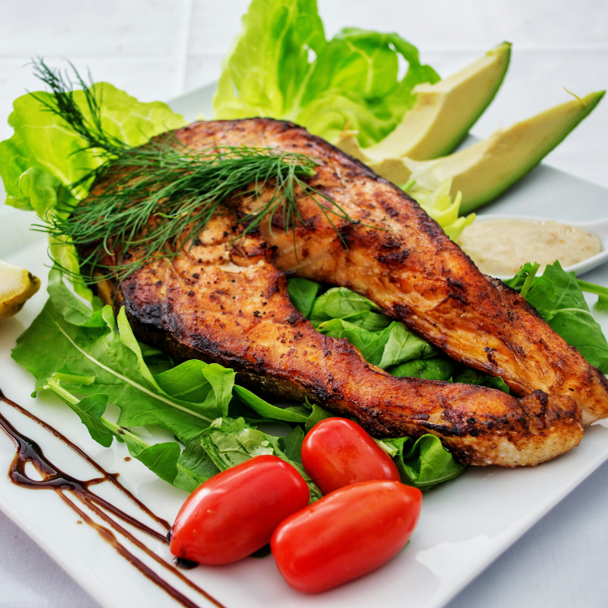

Growing up, we often saw cats in cartoons happily munching on fish. This image has led many people to believe that cats love fish. However, at some point, the internet began to spread the idea that “cats can’t eat seafood” or “cats will get sick from eating seafood.” These rumors have caused confusion and concern among cat owners, who are unsure about the proper diet for their feline friends. In reality, cats’ dietary needs are quite different from ours. Some foods that we find delicious may pose health risks for cats. To ensure our furry companions grow up healthy, it’s crucial to understand which foods are suitable for them and which are not.
This article will delve into the question of whether cats can eat seafood, addressing whether seafood can make cats sick, if cats can eat shrimp, and what to watch out for when feeding cats seafood.
Cooking thoroughly can eliminate the risk of parasites, and allergies are related to individual constitutions. Any food can be an allergen! Regardless of whether it’s seafood, choosing high-quality ingredients, proper storage, and thoroughly cooking the food can prevent the risk of parasites. Each cat may be allergic to different foods, and allergies are mainly related to their constitution. It is recommended to give a small amount of new food first to see if there are any adverse reactions. If not, it is safe to feed them.
Balanced nutrition is the key to a healthy diet! Cats naturally prefer foods they find tasty. There is nothing wrong with letting cats eat what they like, but the key is to ensure balanced and diverse nutrition. Avoid feeding them “long-term, large amounts, and single type” of food. Incorporate non-seafood ingredients into their main diet to keep them happy and nutritious.
Unless it is “long-term, large amounts, and single type” consumption, they will not get sick immediately. Some “raw” seafood contains thiaminase, which destroys vitamin B1 in cats. However, thiaminase loses its activity when heated above 60℃, so it is destroyed during cooking. As long as the seafood is thoroughly cooked, it is safe. Fish like tuna, salmon, mackerel, bonito, saury, and sardines, known as “bluefish” in Japan, require a lot of vitamin E during digestion. Long-term, large amounts, and single type consumption may lead to yellow fat disease due to vitamin E deficiency.
Before feeding your cat seafood, be sure to pay attention to the following three points to ensure your furry friend eats happily, safely, and healthily.
Seafood may carry microorganisms, parasites, or substances harmful to cats. Ensuring thorough cooking can prevent these risks. If preparing fresh food yourself, the freshness of seafood is crucial. Stale seafood can cause gastrointestinal issues or more severe diseases in cats.
Cats are not naturally equipped to eat fish bones, scales, or shells of shrimp, crabs, and shellfish. Especially after cooking, fish bones can harden and cause blockages, throat or gastrointestinal injuries, and even infections or death.
Seafood is a great source of protein and rich in omega-3, DHA, and EPA. However, using seafood as the sole main food can lead to a lack of other nutrients in cats. Just as eating the same food every day is not nutritious for us, it is also not balanced for cats.
In summary, cats can eat seafood, but not in large amounts or as a single type of main food for long periods. This could lead to a deficiency in specific nutrients and make cats picky eaters. Therefore, it is recommended to pair seafood with non-seafood wet foods to provide cats with a varied, delicious, and comprehensive diet.
Here are selected products from Amazon to assist in your decision-making. Links may contain affiliate marketing programs, where clicking and purchasing may generate a small commission for us (at no additional cost to you), helping maintain our website operations.
Want to gain a deeper understanding of cat behavior and how to care for them? Click the link below to read more related articles. read more related articles